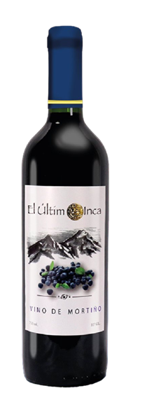

<div class=" bg-image">
  <div class="mx-auto max-w-7xl py-24 sm:px-6 sm:py-32 lg:px-8">
    <div class="relative overflow-hidden px-6 pt-16  sm:px-16 md:pt-24 lg:flex lg:gap-x-52 lg:px-24 lg:pt-0">
      <div class=" mx-auto max-w-md text-center lg:mx-0 lg:flex-auto lg:py-32 lg:text-left ">
        <h2 class="text-3xl font-bold tracking-tight sm:text-4xl">El Último Inca.</h2>
        <p class="mt-6 text-lg leading-8 ">
          Un exquisito vino que encuentra su origen en las pintorescas faldas de los Ilinizas, elaborado por los mismos
          habitantes de esta región antes de deleitar a los paladares más exigentes, tanto en Ecuador como en el ámbito
          internacional.</p>
        <div class="mt-10 flex items-center justify-center gap-x-6 lg:justify-start">
          <a href="#historia"
            class="rounded-md bg-blue-900 px-3.5 py-2.5 text-sm font-semibold text-white shadow-sm hover:bg-blue-950 focus-visible:outline focus-visible:outline-2 focus-visible:outline-offset-2 focus-visible:outline-white">Ver
            Historia</a>
        </div>
      </div>
      <div class="hidden lg:flex">
        <div class="relative mt-24 h-80 flex items-center justify-center lg:inline-flex">
          
        </div>
      </div>
    </div>
  </div>
</div>
